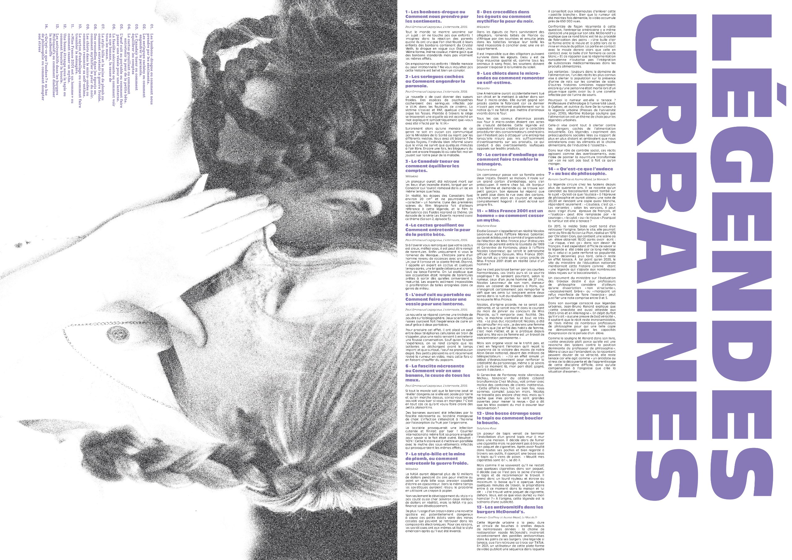
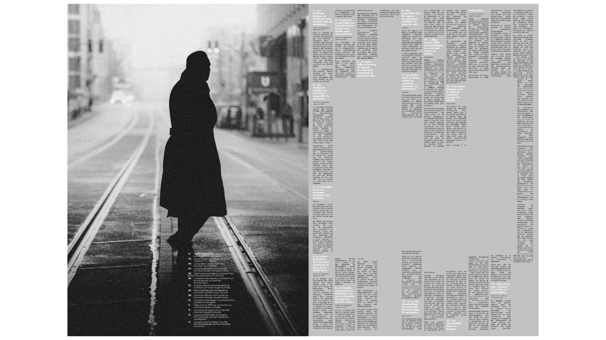
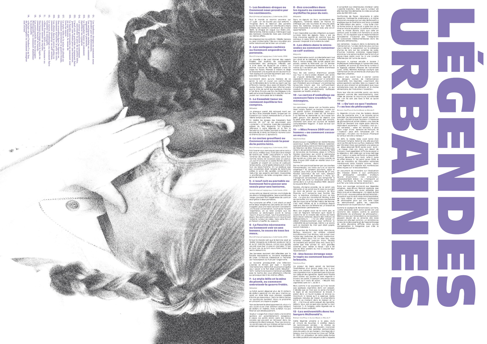
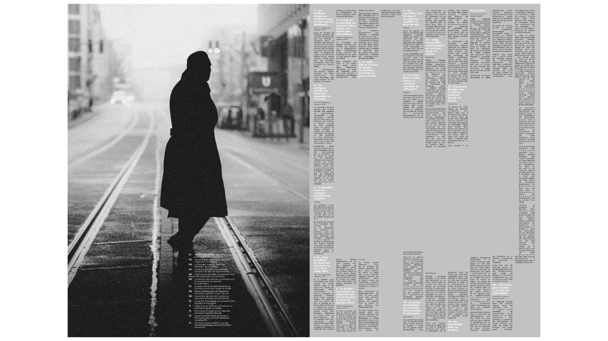

Ce projet portait sur la mise en page et le choix des typographies en lien avec les légendes urbaines. J’ai utilisé des éléments inspirés de la presse, comme une police de style machine à écrire, contrastée avec une autre plus épaisse, rappelant les affiches. Pour l’image, j’ai illustré l’idée du bouche-à-oreille et du téléphone arabe, symbolisant la déformation des histoires dans les légendes urbaines.
 


